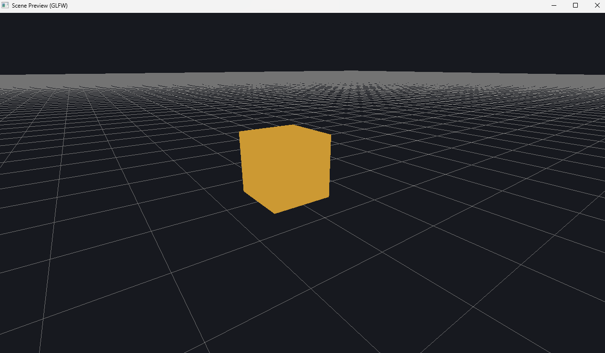

Skeletal Game Engine
The Skeletal Game Engine is an in-development, fully Java-based game engine designed as a learning-focused and experimentation-driven project. Once completed, it will be freely available to download directly from this website.
| Feature | Current Status |
|---|---|
| Built-in 3D Renderer | Basic rendering exists and currently displays in a separate development tab |
| Pre-built and Custom Code Blocks | Coding interface not yet implemented |
| Shader Configuration | Shader system partially planned, not fully implemented |
| Save and Test Games | Feature planned but not yet developed |
Note: The engine is still in an early development stage. Features listed above represent current goals and may change as development continues.
Cube rendered in Skeletal Game Engine